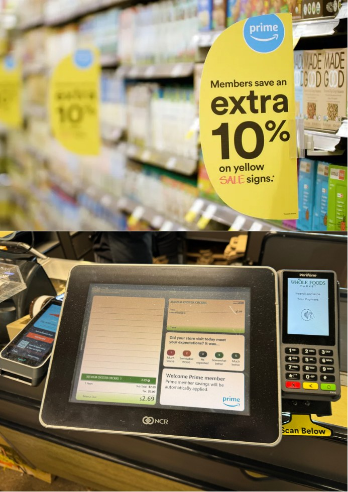
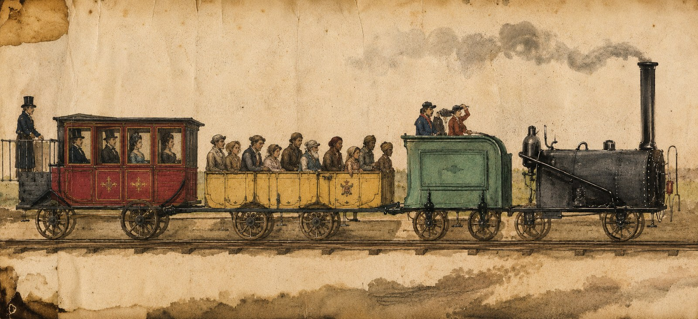
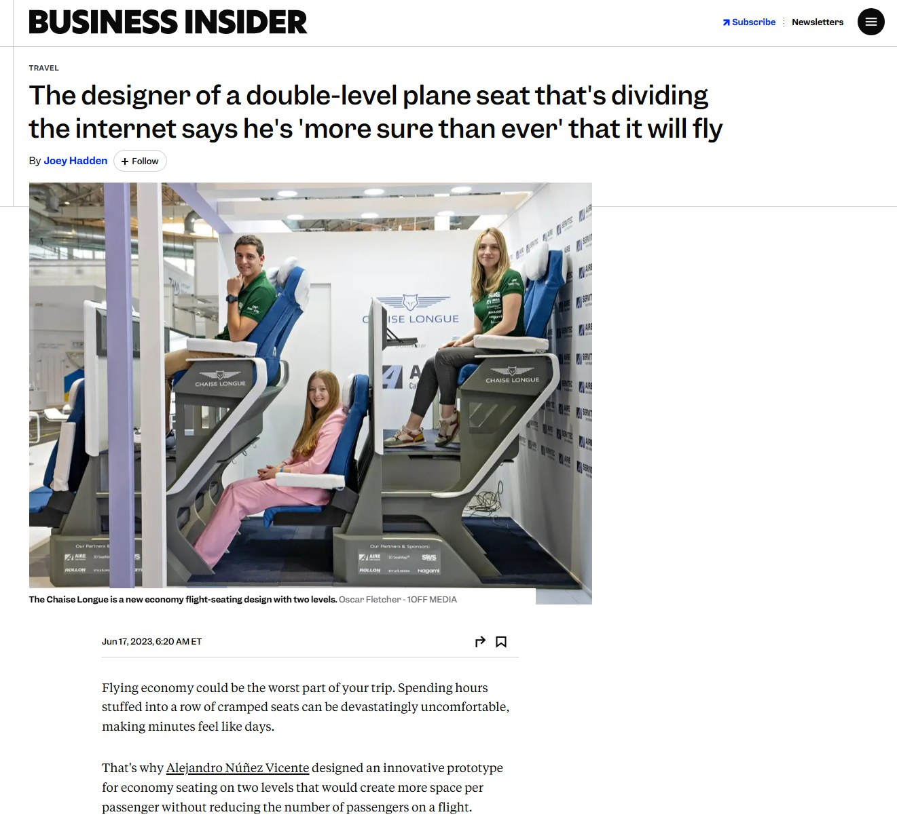
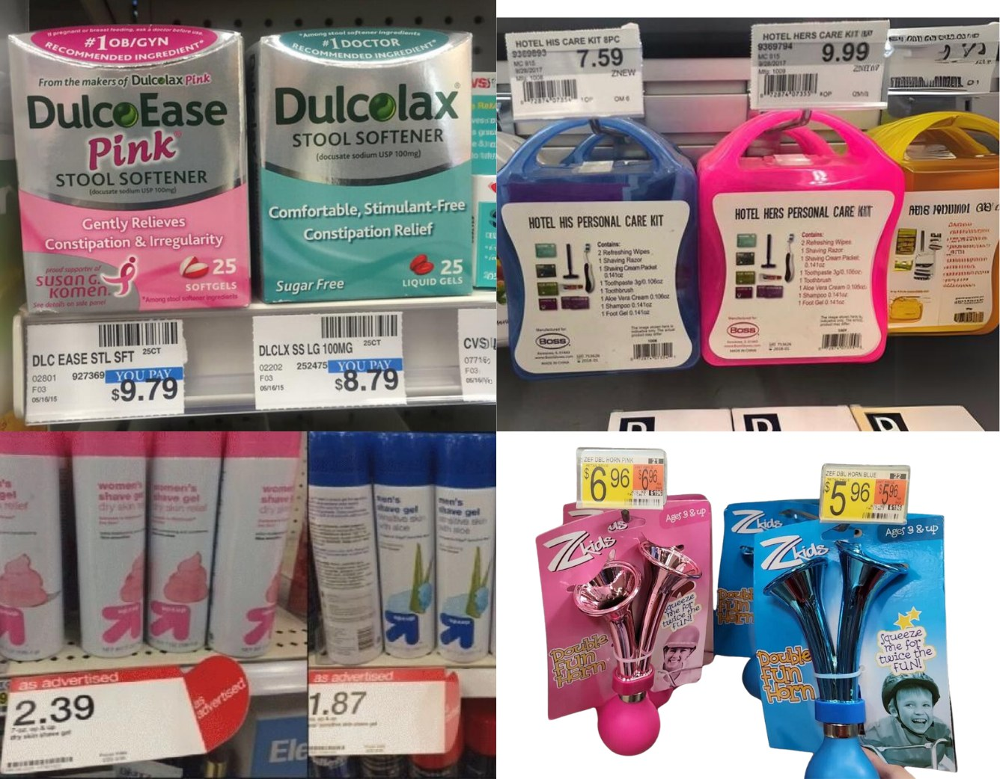
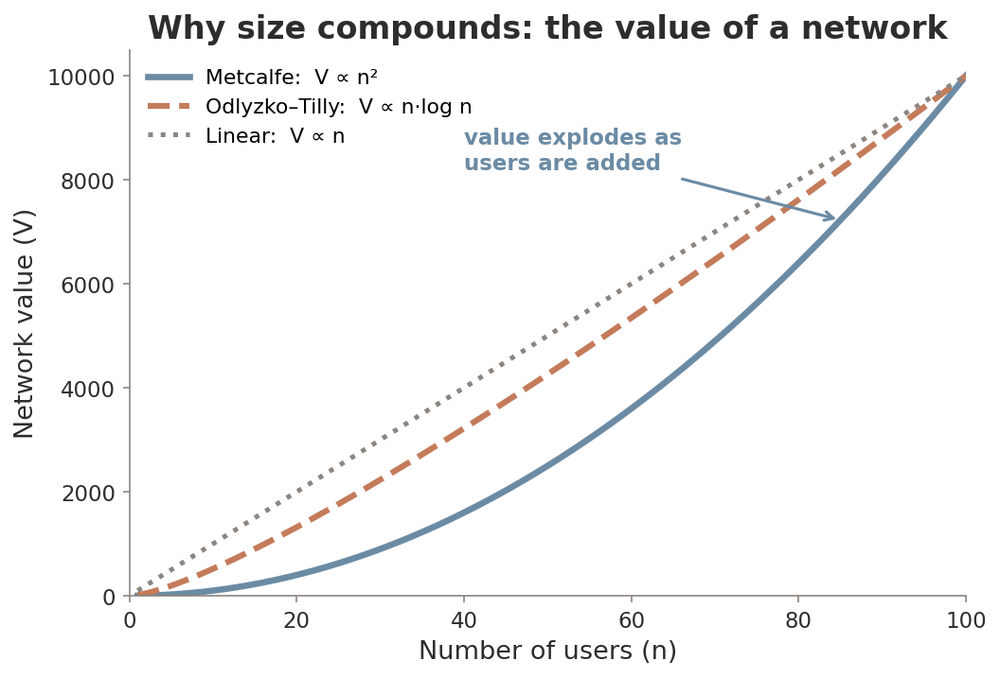
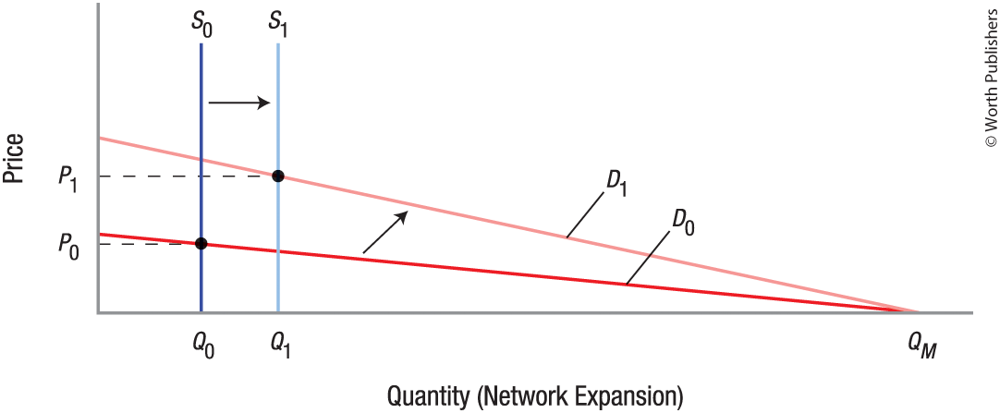
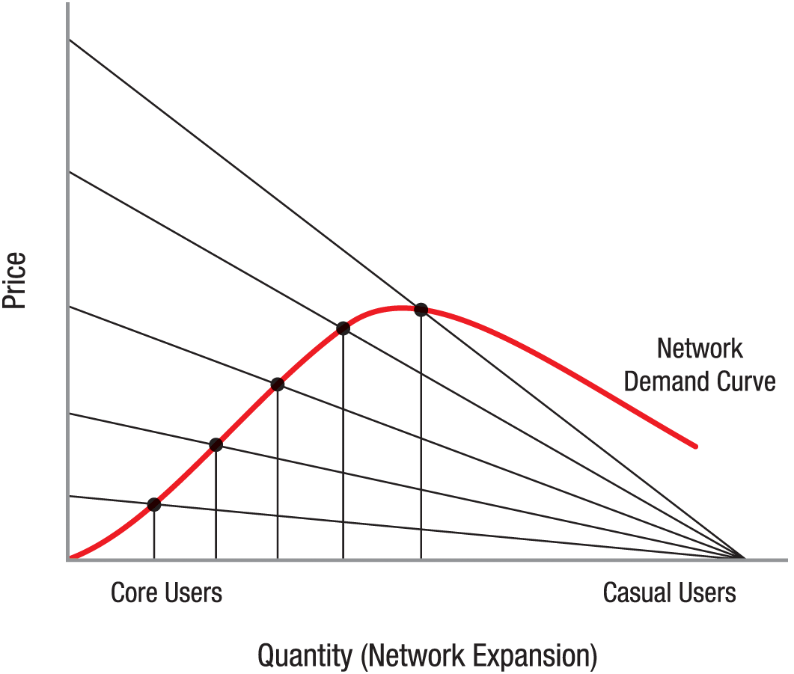
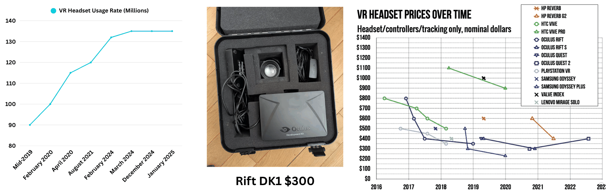
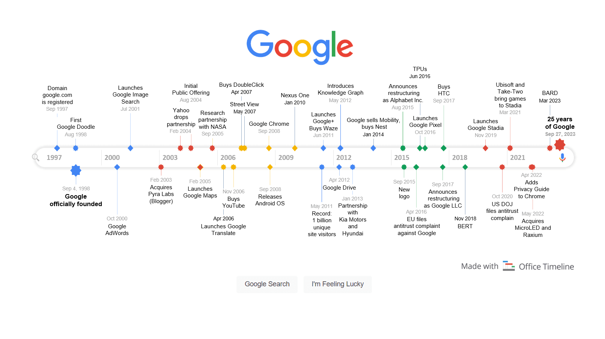
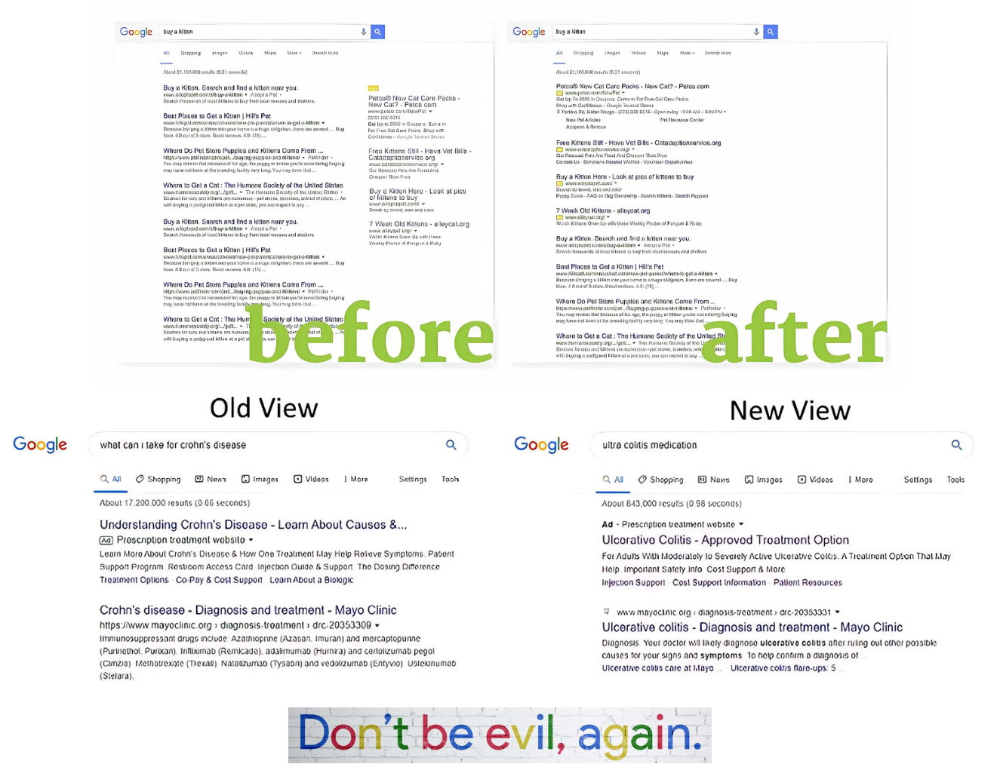

Chapter 11 found the one price a monopolist should charge. So why does Spotify charge five? This chapter is the toolkit for charging different buyers different prices — and capturing the surplus a single price leaves on the table.
Dr. Richeng Piao
Department of Economics
Northeastern University — 100 min
Learning Objectives
By the end of class today, you will be able to…
12.1
Distinguish first-, second-, and third-degree price discrimination by what the firm must know. (Bloom L2)
12.2
Solve a third-degree problem with the per-segment inverse-elasticity rule \(L_i = -1/\varepsilon_{D,i}\). (Bloom L4 — central result)
12.3
Design a two-part tariff and derive the optimal fixed fee \(F^{\ast} = CS(MC)\). (Bloom L3)
12.4
Analyze bundling and explain when it pays via the Adams-Yellen correlation test. (Bloom L4)
12.5
Apply pricing-with-market-power tools to two-sided platforms and cross-side network effects. (Bloom L5)
From One Price to Many
Ch 11 — single price
One price for all buyers: \(MR = MC\)
Markup \(L = (P-MC)/P = -1/\varepsilon_D\)
Captures only the rectangle below \(P_M\)
Leaves consumer surplus and deadweight loss on the table
Converts that left-behind CS into producer surplus
DWL almost always falls — sometimes to zero
One assumption relaxes. Chapter 11 forced the monopolist to post a single price. Drop that — let the firm separate buyers it can tell apart, or get them to sort themselves — and the surplus a uniform price couldn't reach becomes capturable. The common goal of all six tools: convert consumer surplus into producer surplus. The welfare effect on consumers is ambiguous; the effect on the firm's profit never is.
Same Coffee, Two Prices — Third-Degree by Location
Why Does Spotify Charge Five Different Prices?
On any day in early 2026, Spotify offered five US prices for the same music library — Student, Individual, Duo, Family, and a standalone Audiobooks tier. Same firm, same songs, five separate price decisions.
Chapter 11 explained why one price was \(\$11.99\) on the 2025 ladder: the firm sets \(MR = MC\), implying \(L = -1/\varepsilon_D = 0.30\). It did not explain why there are five.
A monopolist with one price leaves money on the table. The fix is to separate the segments — students by SheerID, households by same-address check — and charge each what it will bear. That is price discrimination.
\$6.99
Premium Student (with Hulu)
\$12.99
Premium Individual
\$18.99
Duo (2 accounts)
\$21.99
Family (up to 6)
Plus a standalone Audiobooks Access tier at \$9.99/mo. These are the post-hike figures: on Jan 15, 2026 Spotify reset the whole ladder upward (Individual \$11.99 → \$12.99), reaching existing subscribers in February — we return to it as live data in Theory and Data 12.1. The analysis that follows is calibrated to the 2025 ladder, so the two can be compared.
The Basics of Pricing Strategy
Which pricing tool a firm can use ultimately depends on the information it has about its customers.
1 · Knows demand before the sale
Direct PD — price by observable customer traits.
Knows each buyer's whole demand curve → first-degree (perfect).
Less detail → segment by group → third-degree.
2 · Learns demand only after the sale
Indirect / second-degree — offer a menu, buyers self-select.
Bundle products into a package.
Block pricing & two-part tariffs.
3 · Customers share the same demand
Still profitable: block pricing and two-part tariffs capture extra surplus.
More information → finer discrimination. Full info reaches first-degree; a group label gives third-degree; no way to tell buyers apart falls back on menus, bundles, and two-part tariffs. The rest of the chapter works through each tool.
Pigou's Three Degrees — Ordered by What the Firm Must Know
Arthur Cecil Pigou, The Economics of Welfare (1920). Still the working taxonomy a century later.
First-degree (perfect)
Charge each buyer their exact reservation price. Captures all CS; output equals competitive. Needs: know every buyer's WTP.
Second-degree (menu)
Offer a menu; buyers self-select. The firm can't see types but designs choices so types reveal themselves. Needs: know the distribution.
Third-degree (group)
Segment by an observable label (student, weekend) and apply the Ch 11 rule per group: \(L_i = -1/\varepsilon_{D,i}\). Needs: observe a label that correlates with WTP.
Descending informational demand: know each buyer → know the distribution → observe a group label. Each degree extracts less than the one above but is more achievable. Real firms mix all three — Spotify uses group labels (Student), a menu (Audiobooks vs Premium), and edges toward personalization.
The Catch: No Arbitrage
Every PD scheme must block arbitrage — resale from the low-price segment to the high-price one. If a student bought at \$6.99 and resold to a non-student at \$11, the Student tier collapses.
Spotify: SheerID + same-address checks
Airlines: non-transferable named tickets
Pharma: serialization + 340B audit regime
Theme parks: date-stamped, ID/biometric entry
Heads Up 12.1 — PD needs market power and no arbitrage
Not every price difference is price discrimination. PD requires (a) market power (so \(P > MC\) is sustainable) and(b) no arbitrage between segments.
Two competitive sellers at different prices is price dispersion (search costs), not PD. And a monopolist who cannot stop resale is forced back to a single price — however different its buyers' WTPs.
Without an anti-arbitrage mechanism, PD collapses into a single price. The verification technology — ID checks, contracts, DRM, geography — is what makes the whole chapter possible.
§12.2
First-Degree (Perfect) PD
The upper bound: capture every dollar, restore efficiency — \(Q_{PD} = Q_C\), \(CS = 0\)
First-Degree — Each Buyer’s Exact Willingness to Pay
The firm captures every dollar of consumer surplus. Nearly impossible — but the data economy is closing the gap.
What it takes — all three, or it collapses
1. Market power. Demand must slope down. A price-taker has no price to discriminate with.
2. No arbitrage. The cheap buyer must not be able to resell to the dear one (§12.1).
3. Know each buyer's WTP. The hard one — and the reason first-degree stays a bound.
It’s direct PD — with complete information about customers, the firm charges each buyer exactly their willingness to pay. So what happens to consumer surplus? Under perfect PD it is driven to zero: every dollar of surplus is converted into producer surplus.
First-Degree in Action — the Silver-Coin Auction
With more coins to sell, the seller can message the 5 losing bidders and charge each the maximum price they were willing to pay — exactly what an online auction reveals.
Press → — each bid (right) maps to one slice of producer surplus (left).
Click to enlarge
First-Degree in the Wild — the Car Lot
The car dealership is everyday first-degree PD: the salesperson sizes up each buyer — budget, urgency, trade-in — and negotiates toward your personal maximum.
No two buyers on the lot pay the same price for the same car.
Car Dealerships — Three Buyers, Private Values
Private Information WTP=$12,000
Private Information WTP=$20,000
Private Information WTP=$25,000
Traditional Monopoly: Price = $25,000
PM = $25,000 QM = 1 MC = $12,000 Profit = $13,000
Private Information WTP=$12,000
✗
Private Information WTP=$20,000
✗
Private Information WTP=$25,000
✓
Traditional Monopoly: Price = $20,000
PM = $20,000 QM = 2 MC = $12,000 Profit = $16,000
Private Information WTP=$12,000
✗
Private Information WTP=$20,000
✓
Private Information WTP=$25,000
✓
Price Discrimination — Charge Each Buyer Their WTP
A monopolist who knows each buyer's exact reservation sells one unit to everyone whose WTP exceeds \(MC\), charging each their reservation:
Output expands to the competitive level \(Q_{PD} = Q_C\) — no deadweight loss. But the firm takes every dollar below demand and above \(MC\): \(CS = 0\), and producer surplus equals total surplus.
Perfect PD is the only form of market power that is allocatively efficient — the efficiency loss of monopoly comes from the single price, not from the markup itself. It is also the hardest to achieve: it needs each buyer's WTP.
The trap — monopoly is not the inefficiency
Most students answer that monopoly causes deadweight loss. It doesn't. The single price does.
Remove the single price and the inefficiency vanishes while the market power remains: output returns to \(Q_C\), \(DWL = 0\), and the entire surplus simply changes hands. Efficient and maximally extractive at the same time.
Next slide: drag the number of price tiers and watch \(DWL\) shrink to zero as the firm's take rises to \$3,200.
Drag the Number of Price Tiers: Uniform → Perfect PD
Demand \(P = 100 - Q\); \(MC = 20\). With \(k\) optimally-set price blocks, output is \(Q_k = \tfrac{k}{k+1}\,Q_C\) and profit is \(\Pi_k = \tfrac{k}{k+1}(3200)\). At \(k = 1\) this is the uniform monopoly (\(Q = 40\), \(\pi = \$1{,}600\), \(DWL = \$800\)); as \(k\) grows the blue captured surplus rises toward \$3,200 and the red DWL shrinks to zero.
\(CS_{PD} = 0\), \(DWL = 0\). Profit equals competitive total surplus — the firm captured everything.
Takeaway. Surplus split moves \(0/\$3{,}200\) (competition) → \(\$1{,}600/\$800\) (uniform monopoly) → \(\$3{,}200/0\) (perfect PD), firm/consumer. Perfect PD is the upper bound: efficient and fully extractive. Real firms fall short for one reason — information.
An Attempt at First-Degree PD — Amazon, 2000
Could a seller read each shopper’s willingness to pay online — and quietly charge each a different price? In September 2000, Amazon tried.
Shoppers who deleted their cookies (so Amazon no longer recognized them as regulars) saw lower prices. One customer watched a DVD fall from $26.24 → $22.74.
Close, but not textbook first-degree — only an attempt. Amazon never observed anyone’s WTP: a cookie is a crude proxy for “repeat customer,” which is really third-degree on two groups. And since clearing cookies was free, buyers could sort themselves into the low price — the no-arbitrage condition failed.
The Aftermath
The backlash was immediate — customers felt cheated, and the story made national news.
“We have never tested and we never will test prices based on customer demographics.”
— Jeff Bezos, 2000
Amazon called it “random” testing and refunded shoppers who paid more. The lesson: open first-degree PD on identifiable customers is a PR & legal landmine.
Amazon’s Strategy Today
After the backlash, Amazon and most e-tailers avoid true first-degree PD. Two tools do the work instead:
1. Dynamic pricing(looks second-degree) — the price moves for everyone with demand, rivals, time of day, and inventory. Not personalized — just a hyper-fast algorithm.
2. Personalized marketing — your history triggers a coupon or recommendation aimed at you. Same effect as a personal price — but framed as a discount for you, never a surcharge.
Amazon Personalize — your data drives what you see (and the deal you get)
In-Store: Third-Degree That Edges Toward First
Grouping (third-degree): charge identifiable groups different prices.
Prime members get the discount; non-Prime pay the listed price.
Targeting → a “group of one”: merge your online data (browsing, Prime Video, income proxies) with your offline grocery data.
Amazon learns where you’re inelastic (brand-name detergent at full price) vs elastic (organic chicken only on sale).

The Payoff — Personalized Coupons
Amazon won’t change the register price by shopper (the 2000 lesson). It uses your data for behavior-based third-degree PD later:
Inelastic you — no coupon for the brand-name detergent you always buy. Why discount what you’ll pay full price for?
Elastic you — a targeted “20% off organic chicken” lands in your app, timed to your next trip.
Personalized coupons ≈ personalized prices — quietly approaching first-degree, capturing your surplus over time.
Framing. A “coupon for you” feels like a gift; a “surcharge for you” feels like theft — though the economics is identical. That asymmetry is the whole reason this arc ends in coupons and not in personal prices.
The Evidence — Personalized PD Is Operational
Wendy's, Feb 2024. \$30M of digital menu boards to test “dynamic pricing.” “Surge pricing on burgers” became the story; walked back in two weeks.
Delta, 2025–26. ~3% of the domestic network priced through a Fetcherr AI engine, targeting 20%. Under Senate pressure Delta denied individualized pricing outright.
FTC, Jan 2025. A 6(b) study of eight pricing intermediaries finds a wide range of personal data feeding individualized-pricing tools.
Walmart, 2024–. Electronic shelf labels re-price chain-wide in seconds from the back office — the infrastructure a personal price would run on.
Heads Up 12.2 — possible, but constrained
Treating first-degree PD as “the bound nobody reaches” was true for the 20th century. Cookies + ML + cross-platform identity graphs make individualized pricing operational today.
So the binding constraint is no longer technological — it is political and legal. That prediction has since been settled by events, which is where we go next.
The tag can change in seconds — capability, not yet conduct.
An AI fare engine — which Delta insists reads markets, not people.
The Law That Caught Up — 2026
Two different instruments. Three states ban the practice; one makes you confess to it.
Prohibition
Maryland — first
Effective Oct 1, 2026. Grocers over 15,000 sq ft + food delivery. Fines to \$10k (\$25k repeat), AG-enforced.
Connecticut — broadest
Signed June 2026. Retailers and delivery services generally — not just groceries.
New Jersey — the hardware
Signed Jul 23, 2026. Plus a blanket freeze on new grocery shelf labels, Feb 2027–Feb 2028.
Disclosure
New York — in force Nov 10, 2025. Doesn't ban it; makes you label it: “this price was set by an algorithm using your personal data.” Up to \$1,000 a violation — and the AG pressed Instacart on price variation under it in Jan 2026.
The binding constraint was never informational. Data and ML relaxed exactly the constraint §12.2 said made perfect PD impossible — and the bound held anyway, because a second one bound instead: legitimacy. Roughly 90 bills across 27 states are live, and the Senate took testimony on Aug 4, 2026.
§12.3
Second-Degree PD
Versioning & screening: offer a menu, let buyers reveal themselves
Can't Tell You Apart? Make You Choose
The firm knows the distribution of types but can't observe any individual's type — and can't just ask (everyone would claim the cheap type). Its only tool: a menu designed so each type's own best choice reveals it. Pricing becomes mechanism design.
Individual rationality (IR): each type's chosen package gives non-negative surplus, so it participates. “Is this worth buying at all?”
Incentive compatibility (IC): each type prefers its assigned package to any other on the menu. “Would I rather have the one meant for somebody else?”
Maximize profit subject to IR + IC for all types — the screening menu (Mussa-Rosen 1978; Maskin-Riley 1984). Two classic forms: versioning (quality tiers) and quantity discounts.
Fig 12.4 — two quality tiers; the high type self-selects up.
The figure is the quality axis, worked later in Walkthrough 12.2. Walkthrough 12.3 runs the identical logic on the quantity axis. One idea, two axes — and every example between here and there is one or the other.
Second-Degree — Build a Menu, Let Buyers Sort Themselves
The firm can’t tell who you are — so it designs options and lets you reveal your type by choosing.
Versioning. Spotify: Individual $12.99 → Duo $18.99 → Family $21.99, same catalogue, tiers gated by account count.
Quantity discounts. Costco 50-bag box at $0.45/bag vs $0.50 at the corner store.
Two-part tariffs. Gym: $300/yr + $10/class. Buffet: $20 in, $0/plate.
Bundling. $15 CD (12 songs) → iTunes $0.99 unbundled → Spotify re-bundles 100M songs at $12.99.
Netflix tiers: $6.99 ad-supported vs $22.99 premium — a $16 gap for the same library. Cinephiles self-select up; budget households (higher elasticity) self-select into ads. ~70M ad-tier users by 2025.
It’s indirect PD — used when the firm has market power and can prevent resale, customers have different demand curves, but the firm can’t identify a buyer’s type before purchase. Its tool: post a menu of pricing options and let customers self-select.
Versioning
Versioning — a pricing strategy in which a firm offers different product options designed to attract different types of consumers.
Common example: air travel — the same plane sells leisure and business fares, fenced apart by advance-purchase and stay rules.
Versioning does not require a cost difference — the marginal costs of the versions need not be equal.
The only requirement: the markup must be higher for the segment with the less elastic demand — business travelers (inelastic) carry the higher markup; leisure travelers (elastic, price-sensitive) pay less.
Versioning — Buyers Self-Select
Offer a menu of versions and let each buyer voluntarily pick the one best for them — revealing their type. The firm prices by the version chosen, not by who you are. To make buyers split, firms widen the gap between tiers — sometimes intentionally limiting the cheaper one (the “damaged-goods” idea: stripped Basic Economy, a deliberately crippled chip).
Spotify is textbook versioning:Individual ($12.99), Duo ($18.99 / 2 accounts), Family ($21.99 / up to 6 accounts). Households self-select by size, and the cheaper tiers are deliberately capped (one account, same-address rules) so higher-value households pay more.
Self-Sorting Captures the Entire Demand Curve
Highly price-inelastic. Cinephiles & high-income households want 4K HDR — they pay $22.99+/mo and refuse to watch ads.
Highly price-elastic. Budget households & students — captured by the $6.99 ad-supported tier (~70M monthly active users by 2024).
To fund $17B+/yr of content like Stranger Things, Netflix uses the identical core product to monetize the bottom of the curve without sacrificing the margins at the top.
Versioning in Action — Duo vs Family
Two tiers from the menu on the last slide. Assume these monthly willingness-to-pay values:
Monthly WTP
Duo (2 accounts)
Family (up to 6)
Couple
\$24.00
\$26.00
Household of five
\$28.00
\$38.00
Spotify's actual prices today: Duo \$18.99, Family \$21.99. (press →)
Couple → Duo. Surplus \$24.00 − \$18.99 = \$5.01; Family would leave only \$4.01.
Household of five → Family. Surplus \$38.00 − \$21.99 = \$16.01; Duo would leave only \$9.01.
Each household picks the tier built for it — the menu is incentive compatible Note nobody checked a birth certificate: the household chose.
Versioning — When IC Fails
Same households, same WTP. Now Spotify gets greedy and prices Family at \$29.99 (up from \$21.99); Duo stays \$18.99. (press →)
Monthly WTP
Duo (2 accounts)
Family (up to 6)
Couple
\$24.00
\$26.00
Household of five
\$28.00
\$38.00
Couple → Duo (unchanged): surplus \$5.01. Family would now be −\$3.99 — worse than not subscribing.
Household of five → Duo now: Duo surplus \$9.01 beats Family's \$8.01. Five people share two accounts.
Both households buy Duo — the Family tier never sells. The menu is not incentive compatible: overprice the high version and the high-value household defects downward. Family has to stay under \$28.99 to survive.
The “Stripped” Economy — Damaged Goods
The flip side of versioning: a firm will deliberately make the cheap version worse — spending nothing, or even money, to degrade it — so high-WTP buyers refuse to trade down and pay for the premium tier.

Then. 1840s railways ran roofless third-class cars. Dupuit (1849): “not to hurt the poor, but to frighten the rich.”

Now. Ever-tighter “stripped” economy seats and Basic Economy keep the cheap tier just painful enough to upsell.
Now, in software — Spotify Free
Same catalogue as Premium. What Free removes:
ads between tracks · no offline downloads · no playing songs in any order · no lossless audio · no group session · no queue control
Restoring every one of those costs Spotify \$0.
Software makes Dupuit's point unanswerable. Ripping a roof off a carriage at least saved timber; letting you play a song in the order you like has a marginal cost of exactly zero. So the limit cannot be about cost — it can only be there to protect the Premium fare.
Walkthrough 12.2 — Standard vs Deluxe Edition
Problem. A studio ships one game in two editions: Standard, and Deluxe (skins, season pass, early access). The extras are digital, so \(MC = 0\) for either edition. Two equally common buyers, types unobservable. What menu \((P_{Std}, P_{Dlx})\) maximizes profit?
Willingness to pay
Standard
Deluxe
Casual gamer
\$40
\$50
Superfan
\$60
\$110
The casual gamer barely values the extras (\$40→\$50). The superfan wants them badly (\$60→\$110). That gap is what makes screening possible.
1. Price the Standard. Ask: what is the most the casual gamer will pay? \$40 — take all of it. \(P_{Std} = \$40\). (the low type's IR)
2. Price the Deluxe. Careful — the superfan could just buy the Standard and pocket \$60 − \$40 = \$20. So the Deluxe must leave them at least \$20: \(110 - P_{Dlx} \geq 20\), so \(P_{Dlx} = \$90\). (the high type's IC)
3. Profit. \$40 + \$90 = \$130 per pair of buyers.
4. Compare to one edition. Best single-edition play is Deluxe at \$110, superfan only — \$110. (Deluxe at \$50 to both earns just \$100.) The menu wins by \$20.
The \$20 is the information rent. Perfect PD would take \$40 + \$110 = \$150. The menu gets \$130, because to stop the superfan buying down the studio must let them keep \$20. That is the standing price of not being able to tell your customers apart — and the superfan is paid it for volunteering the truth.
Quantity Discounts
Firms often use quantity discounts to price-discriminate — a lower per-unit price for buyers who purchase larger quantities. It is the workhorse of second-degree PD.
It is indirect PD: the firm posts the menu and each consumer group self-selects the package meant for it — the price offered to a group must be the one that group chooses.
It rides on incentive compatibility (IC): the deal aimed at one type must be the one that type actually prefers — no buyer profitably grabs another type's package.
The catch: discount too steeply on the large quantity and you cannibalize — the low-demand buyer abandons the small package and grabs the bulk deal meant for the high-demand buyer. IC breaks. We are about to watch this happen on purpose.
Quantity Discounts — Buy in Bulk, Pay Less per Unit
Costco, 50-pack $22.99 ÷ 50 = $0.46 / bag
Star Market, 2 for $1 $0.50 / bag
Star Market, single $0.59 / bag
Buying in bulk → a lower cost per unit. Look at the bag: “2/$1 or 59¢ ea.” is printed on the packaging — the whole menu, on the product. Pricing by quantity is second-degree PD, and the next three slides analyse exactly this menu.
Two Buyer Types, One Menu
Same Star Market menu as the last slide — \$0.59 each, or 2 for \$1.00, printed on the bag. Marginal cost is \$0.30 a bag. Two kinds of shopper walk in, and the firm cannot tell them apart:
The occasional buyer
One person, one movie night. \(P = 1.04 - 0.45Q\) — steep, because the second bag is worth much less than the first.
The obsessed buyer
Snacks all week. \(P = 0.70 - 0.10Q\) — flat, because bag two is nearly as good as bag one.
Total value of…
1 bag
2 bags
2nd bag alone
Occasional
\$0.815
\$1.180
\$0.365
Obsessed
\$0.650
\$1.200
\$0.550
Areas under each demand curve. Note the occasional buyer values one bag more than the obsessed buyer does — they differ in how fast value falls off, not in how much they like chips.
If it could tell them apart, the firm would charge each their full value. It can’t — so it posts one menu and lets them sort themselves. The question is whether they sort the way the firm intends. That is incentive compatibility, and it is not automatic.
Does the Real Menu Screen?
Tempt the occasional buyer with 2-for-\$1.00 (\$0.50 a bag). Weigh what they save against what they waste. (press →)
Saves \$0.099. The per-bag price falls \$0.59→\$0.50 on the bag they’d buy anyway, plus a sliver of cheap extra units out to \(Q = 1.20\).
Wastes \$0.144. At \$0.50 they want only 1.20 bags. The deal forces 2. The rest goes stale — that waste is the red triangle.
Loss beats gain by \$0.045 — so the occasional buyer sticks with the single bag. The real menu is incentive compatible.
Check it the other way, on totals: one bag leaves \(0.815 - 0.59 = \mathbf{\$0.225}\); two bags leave \(1.18 - 1.00 = \mathbf{\$0.180}\). And the obsessed buyer goes the other way — \(1.20 - 1.00 = \$0.200\) beats \(0.65 - 0.59 = \$0.060\). Each type picks its own package. The menu works.
How the Firm Breaks Its Own Menu
Deepen the discount and the two areas swap. Same demand, same axes — only the bulk price moves.
2 for \$1.00 — the real menu
saves \$0.099 < wastes \$0.144 → buys one bag
2 for \$0.90 — too generous
saves \$0.162 > wastes \$0.107 → takes the bulk deal
The menu survives only above \$0.955. Below that the occasional buyer defects, nobody buys the \$0.59 bag, and the firm has cannibalized its own full-price sale — profit per pair of shoppers falls \$0.69 → \$0.60. The discount that looked more generous made the firm poorer.
Walkthrough 12.3 — Quantity-Discount Menu
The story. Spotify’s 2023 audiobooks launch meant selling listening hours — and a commuter who finishes four books a month looks identical at signup to someone who abandons one. Asking is useless. So it sells hours in packages and lets you pick:
Problem. Two equal types: Light \(q_S(p) = 3 - p\), Heavy \(q_L(p) = 6 - p\). \(MC = 0\). Design two packages — small (\(q_s = 3\), price \(T_S\)) and large (\(q_l = 6\), price \(T_L\)).
IR\(_S\) — will Light buy at all? Only if the package costs no more than it is worth to her: \(T_S \leq 4.5\). Nothing stops the firm taking every cent of that, so \(T_S = 4.5\).
IC\(_L\) — would Heavy rather buy Light’s package? Heavy values those 3 units at \(13.5\) but would pay only \(4.5\), pocketing \(9\). So the large package must leave him \(9\) too: \(18 - T_L \geq 9 \Rightarrow T_L = 9\).
Profit & rent
Profit per pair \(= 4.5 + 9 = \$13.50\). Best uniform price: \(p^{\ast} = 2.25\), \(\pi = \$10.13\) — the menu lifts it 33%.
Perfect PD upper bound \(= 4.5 + 18 = \$22.50\); the \(\$9\) gap is the rent Heavy pockets (\(CS_L(6) - T_L = 18 - 9\)).
Four constraints — only two bind
IR Light — BINDS keeps \(0\)
IR Heavy — slack keeps \(9 > 0\)
IC Light — slack big pack \(=-4.5\)
IC Heavy — BINDS indifferent
Light has nothing cheaper to run to, so only participation limits the squeeze. Heavy does have a bargain sitting there, so he must be paid to stay. Always: IR from the bottom, IC from the top.
Press ↓ to see why \(T_L\) stops at \$9 — the two areas that pin it.
Walkthrough 12.3 — Why \(T_L\) Stops at \$9
(a) Light buyer — \(q_S = 3-p\)
\(T_S = \$4.50\) takes the whole area. Light keeps \$0 — its IR binds.
(b) Heavy buyer — \(q_L = 6-p\)
First 3 units are worth 13.50; the next 3 add only 4.50.
Heavy takes the small package: \(13.50 - 4.50 = \mathbf{\$9.00}\)
Heavy takes the large package: \(18.00 - T_L\)
Set them equal: \(T_L = \$9.00\). Charge a cent more and Heavy walks down to the small package — so the \$9 it keeps isn’t generosity, it’s the price of the small package existing at all. That is what “IC binds” looks like.
§12.4 — the central tool
Third-Degree (Group) PD
The Ch 11 inverse-elasticity rule, applied per segment: \(L_i = -\dfrac{1}{\varepsilon_{D,i}}\)
Segmenting — Third-Degree PD
Follow the information. First-degree needed every buyer’s own WTP — unobtainable. Second-degree needed only the distribution of types. Third-degree needs least of all: one observable label that correlates with elasticity. Less information, less extraction — and far easier to actually run.
When to use it
1. Market power + can prevent resale.
2. Customers have different demand curves.
3. The firm can identify groups (not individuals) with different price sensitivities before purchase.
Third-degree extracts more surplus than a single-price monopolist — but less than first-degree (it sorts groups, not individuals).
Each group’s markup then follows the per-segment inverse-elasticity rule \(L_i = -1/\varepsilon_{D,i}\). The next four slides are the labels firms actually use.
Third-Degree — Different Price to an Observable Group
Spotify. \$12.99 Individual vs \$6.99 Student. Students have higher elasticity; a .edu check prevents arbitrage. Charge them full price and you lose them entirely.
The logic is always elasticity: charge the inelastic group more, the elastic group less. Segment by an observable trait — age, student status, location, timing — and stop resale.
Third-degree. The seller observes your group and assigns the price. You cannot opt in.
Second-degree. The seller posts a menu and you pick. Your choice reveals your type.
Same elasticity logic driving both — the difference is who does the sorting. This is the most-tested distinction in the chapter.
Third-Degree — the Student Discount
A segment is only worth defining if you can verify it. The .edu check is doing the real work here — it is the arbitrage fence. No fence, no segment: one resold login and the \$6.99 tier becomes everyone’s price.
Third-Degree — Student Platforms (UNiDAYS)
Platforms like UNiDAYS gate deals (HP, Microsoft 365) behind a verified student ID. The long-run twist: once students learn these tools, they keep using them at work — becoming more inelastic later, when they'll pay full price.
Third-Degree — Movie Tickets (by Age)
Movie theaters charge different ticket prices for children, adults, and seniors — age is the observable trait, and the ticket is checked at the door (no resale).
Third-Degree — Airline Fares
Airlines charge varying fares to leisure (elastic) vs business (inelastic) travelers.
Prices rise as the departure date nears (late buyers = business).
Lower fares on non-peak days & with advance booking (leisure).
The ticket must be used by the purchaser — arbitrage blocked.
Isolating Impulsive Buyers — Without Cutting Margins
Gen Z User (Impulsive)
TikTok's algorithm tracks watch-time to the millisecond and fires highly targeted flash coupons to trigger impulse buys.
30% Flash Discount
↙
Older Demographic (Direct Search)
Older buyers viewing the exact same product see no discount.
Which degree is this?Third — and it is the modern form of it. The platform assigns the price from what it observes (watch-time, scroll speed, whether you arrived by feed or by search); you never pick from a menu. Buyer chooses ⇒ second-degree. Firm sorts you ⇒ third. The only thing that has changed since student IDs is how fine the groups can get — push it far enough and the “group” is one person.
This isolation generated $65B in GMV(gross merchandise value — the total value of goods sold through the platform) for TikTok Shop in 2025. Sellers optimize revenue by never running site-wide discounts that would erode profit from buyers already willing to pay full price.
Disneyland's Local-Resident Pricing
Two distinct consumer groups at Disneyland: Locals and Travelers (who fly in from elsewhere). A good case for third-degree PD?
Market power? Yes — iconic destination, few close substitutes.
Different demand curves? Yes — travelers likely differ from locals.
Identify groups & prevent resale? Yes — require ID → effective segmentation.
Why the Two Demand Curves Differ
Income: travelers tend to have higher incomes — less sensitive to the fee.
The entry fee is a small share of a traveler's total trip (airfare, hotel) — so they're less price-sensitive.
Result: at its own optimum each group has its own elasticity — travelers \(\varepsilon_D = -1.83\), locals \(-2.43\). Careful: “steeper” is not the same as “less elastic.” Check the numbers, not the picture.
(a) Travelers
(b) Locals
Segmenting entry fees: each group priced where its own MR = MC; the less-elastic travelers pay more (\$220 vs \$170).
Solve Each Segment: \(MR = MC\)
The two demands, with a common \(MC = \$100\) per entry: travelers \(Q_T = 1{,}700 - 5P_T\), locals \(Q_L = 2{,}400 - 10P_L\). The bigger price coefficient (\(-10\) vs \(-5\)) is what makes locals the more price-sensitive group. Invert, double the slope for \(MR\), set equal to \(MC\):
Segmenting earns \$8,333 more — a 7.4% gain, not a windfall.
Look at the row that matters: total entries are identical. Segmenting moved 167 entries from travelers to locals and created not one new visit. So the firm's \$8,333 is pure transfer — consumers lose \$12,500, and total surplus falls \$4,167. Unlike perfect PD in §12.2, third-degree PD is not efficient.
How Much Should Each Segment Be Charged?
A segmenting monopolist treats each segment as its own market, so the Lerner index sets the optimal markup per segment:
\(\dfrac{P - MC}{P} = -\dfrac{1}{\varepsilon_D}\)
Solve it segment by segment. At the Disneyland optimum:
Travelers: \(\varepsilon_D = -1.83\)
Locals: \(\varepsilon_D = -2.43\)
Two steps, no algebra tricks. Take the markup, then back out the price with \(P = \dfrac{MC}{1 - L}\):
Elasticity alone pins both prices — \$220 and \$170, the same answer as the \(MR = MC\) solve. Travelers pay ~30% more, and \(MC\) was identical for both.
Press ↓ to try the rule yourself — same tour, two cities.
You Try — Same Tour, Two Cities
An artist plays back-to-back arena dates. The promoter's marginal cost per seat is \$60 — the artist's guarantee eats most of every ticket. Demand differs by market: Boston \(\varepsilon_D = -3\) (student-heavy, price-sensitive), New York \(\varepsilon_D = -2\) (denser fanbase, higher incomes, out-of-town buyers). Price each date. (try it, then press →)
Use \(\dfrac{P - MC}{P} = -\dfrac{1}{\varepsilon_D}\):
New York \((\varepsilon_D=-2)\): \(\dfrac{P-60}{P} = \dfrac{1}{2} \Rightarrow 2(P-60)=P \Rightarrow P_{\text{NYC}} = \$120\)
The less-elastic New York date carries the higher price — \$120 vs \$90, a 33% premium on an identical show.
Then ask what stops arbitrage. Nothing physical — Boston is the cheap date, so a New York fan could buy there and take the bus up. The fence is the travel cost, and it only has to exceed the \$30 saved. Segmentation survives on friction, not on walls.
Calculus Corner 12.1 — Inverse-Elasticity Rule, Per Segment
With \(K\) non-arbitrageable segments and constant \(MC\), maximize
Equivalently \(P_i = \dfrac{MC}{1 + 1/\varepsilon_{D,i}}\). The rule from Ch 11 simply fires \(K\) times in parallel — once per segment.
The more-elastic segment gets the smaller markup. Students pay less because their demand is more elastic; business travelers pay more because theirs is not.
The only difference from Ch 11: Ch 11 had one segment, Ch 12 has \(K\). Same engine, run per group — segments don't interact because there's no arbitrage between them.
Application 12.1 — Spotify's Portfolio as Live Third-Degree PD
Five distinct prices for functionally the same library — each segment with a different elasticity, a different anti-arbitrage technology, and a different observed Lerner index. Spotify's Q4 2025 blended global ARPU of €4.70 (~\$5.10/mo) sits far below the 2025 US Individual list of \$11.99 — a wedge driven by exactly this multi-segment cross-subsidization. (Both figures are Q4 2025, so they are period-matched; today's list is \$12.99.)
Fig 12.3 — two segments, common \(MC\); each priced where \(MR_i = MC\). Less elastic → higher price.
Walkthrough 12.4 — Student vs Premium via Inverse Elasticity
Problem. Ch 11–locked \(MC = \$8.40\). Premium’s elasticity is derived from Ch 11: \(L = 0.30 \Rightarrow \varepsilon_P = -1/L = -3.33\). Students are the more elastic group — that is why they get the discount — so take \(\varepsilon_S = -5.0\). Predict each price by \(P_i^{\ast} = MC/(1 + 1/\varepsilon_{D,i})\) and compare to the 2025 ladder (\$5.99, \$11.99).
Student: \(P_S^{\ast} = 8.40/(1 - 1/5.0) = 8.40/0.8 = \$10.50\) — more elastic, so a lower price, as the rule requires.
Compare to actual
Premium: predicted \$12.00 vs actual \$11.99 — match within \$0.01 ✓.
Student: predicted \$10.50 vs actual \$5.99 — and the actual sits below the \$8.40 MC. Implied Lerner \(L_S = (5.99 - 8.40)/5.99 = -0.40\) — negative.
Takeaway. \(P^{\ast} = MC\cdot\frac{|\varepsilon|}{|\varepsilon|-1}\) falls toward \(MC\) as \(|\varepsilon|\) grows, so \$8.40 is the rule’s floor — no elasticity predicts \$5.99. A price below \(MC\) is not a static monopoly price: Student is a loss leader for post-graduation value.
The 2026 hike, same lens. At \$12.99, \(L = 0.353 \Rightarrow \varepsilon_P = -2.83\): raising price claims demand grew less elastic — checkable against churn. (TD 12.1.)
Walkthrough 12.5 — Family Tier: When the Formula Breaks
Problem. Same \(MC = \$8.40\), same rule \(P_i^{\ast} = MC/(1 + 1/\varepsilon_{D,i})\). Assume Family-segment elasticity \(\varepsilon_F = -1.5\) (toward inelastic). Predict the Family-subscription price and compare to the 2025 actual (\$19.99).
Apply the rule
\(P_F^{\ast} = 8.40/(1 - 1/1.5) = 8.40/(1/3) = \$25.20\). Predicted \$25.20 vs actual \$19.99 — off by \$5.21.
As \(|\varepsilon| \to 1\), \((1 + 1/\varepsilon) \to 0\), so \(P^{\ast} \to \infty\). The formula assumes the firm operates strictly where \(|\varepsilon| > 1\); near \(|\varepsilon| = 1\) it explodes.
What constrains real pricing
Per-account dilution (\$19.99 / 6 = \$3.33 < MC), household-sharing externalities, and a competitive ceiling (Apple Music Family, then \$16.99).
Real pricing = inverse-elasticity rule plus side constraints — exactly what a Ch 13 oligopoly model starts to formalize.
Takeaway. Near \(|\varepsilon| = 1\) the inverse-elasticity rule blows up, and actual pricing is pinned by competitive ceilings and account-mass economics the static formula can't see. The tool tells you where it stops being the whole story — that's the bridge to Ch 13.
Since the hike: Family is \$21.99, so per-account is \$3.67 — still far below \(MC\), and the rule still over-predicts (\$25.20 vs \$21.99, off by \$3.21). And the ceiling moved too: Apple Music Family went \$16.99 → \$19.99 on 17 Jul 2026. Both firms re-priced within six months of each other — which is the Ch 13 point, arriving on its own.
Application — Wegovy Across Institutional Segments
Pharma = third-degree PD on steroids
Branded Wegovy carries segment-specific prices: Medicaid (statutory rebate floor), Medicare (IRA-negotiated Max Fair Price, effective Jan 1 2026), commercial (PBM-rebated 30–50% below list), and cash-pay (highest list).
Ch 11 cash-pay 4-tuple: \(P \approx \$1{,}349\), \(MC \approx \$5\), \(L = 0.996\), \(\varepsilon_D = -1.004\). Medicaid ~\$1,037/mo post-rebate, Lerner still ~0.99. Same drug; the system enforces the segments.
Heads Up 12.3 — PD welfare is ambiguous
PD does not always reduce welfare. If PD lets the firm serve a market it would otherwise abandon, total surplus rises (output expands). If it only redistributes CS→PS, surplus is unchanged. If it cuts output (rare), surplus falls.
Evidence is mixed: Williams (2022, airlines) finds dynamic pricing raises welfare via output expansion; Crawford-Yurukoglu (2012, cable) finds CS falls ~5%. The welfare question is empirical, not theoretical.
Theory and Data 12.1 — Spotify's Jan 15, 2026 Portfolio Reset
On Jan 15, 2026 Spotify reset the whole US ladder: Individual \(\$11.99 \to \$12.99\), Student \(\$5.99 \to \$6.99\), Duo \(\$16.99 \to \$18.99\), Family \(\$19.99 \to \$21.99\). Audiobooks stayed at \$9.99.
If per-subscriber MC scales at 70% of list, the new MC is \(0.70 \times 12.99 = \$9.09\). The new Lerner is \(L = (12.99 - 9.09)/12.99 = 0.300\) — exactly unchanged. Implied \(\varepsilon_D = -3.33\), also unchanged.
A firm at the FOC, facing the same elasticity and the same MC-as-share-of-price, moves list price and MC in lockstep — holding the markup constant against royalty-cost inflation.
\$12.99
New Individual (was \$11.99)
\$9.09
New implied royalty \(MC\)
0.300
Lerner \(L\) — held constant
−3.33
Implied \(\varepsilon_D\) — unchanged
The “Pink Tax”: Price Discrimination or a Cost Difference?
The observation
Products and services aimed at women — razors, shampoo, haircuts — are often more expensive than the versions for men.
The 2015 NYC DCA report found an average price gap of 7%–13%.
Same shelf, two prices — but is the gap price discrimination (women less willing to switch) or a cost difference? You can't tell from the price tags alone.

The Pink Tax: Price Discrimination — or the Evidence?
Hypothesis 1 — Price Discrimination. Firms charge women higher markups because their demand is less price-elastic (lower willingness to switch brands).
Hypothesis 2 — Cost Difference. Recent studies on goods (e.g. shampoo) challenge the PD story:
Moshary et al.: comparing the same brand with the same leading ingredients, the gap vanished or reversed — women's versions were cheaper ~60% of the time.
Barnes & Brounstein: econometrics find women's demand is slightly more elastic than men's — the opposite of what PD requires.
Conclusion (goods): the evidence points to different production costs (pricier ingredients/packaging), not gender-based price discrimination.
Caveat: for services like haircuts the cause is still unsettled — could be higher cost or discrimination.
The lesson: a visible price gap is not proof of discrimination — you need evidence on costs and elasticities.
Application: Price Discrimination in the European Car Market
The strategy — segment by country. Automakers (e.g. VW) sell the same car at different prices across European countries, charging higher markups where local demand is less elastic.
Preventing resale (arbitrage):
manuals printed only in the local language;
servicing restricted to the country of purchase;
dealers punished for selling across borders.
The evidence (Goldberg & Verboven): the same VW Golf varies sharply. In 2015, Portugal > Germany > Greece — a Golf was ~20% dearer in Germany than Greece, but ~20% cheaper than in Portugal.
Some of the gap is taxes — but much is third-degree price discrimination: higher prices where demand is less elastic (Portugal), lower where it's more elastic (Greece), with arbitrage actively blocked.
Nonlinear pricing
Block Pricing
A high price for the first block, less for the next — capture surplus from one buyer's own demand
Block Pricing — When to Use It
Two conditions for block pricing and two-part tariffs:
1. The firm has market power and can prevent resale.
2. Its customers may have identical or different demand curves.
Block pricing is the practice of reducing the price of a good as the customer buys more of it.
What it needs — and what it doesn't. One schedule is posted for everyone, so the firm never has to tell buyers apart: there is no IC constraint to satisfy, unlike the §12.3 menus.
But it does need the demand curve. On the next slide the two block prices are read straight off \(D\) — \$0.19 is \(D\) at 100 flyers, \$0.16 is \(D\) at 150.
Block pricing is second-degree PD on the quantity axis — the same ladder the \(k\)-tier explorer climbed in §12.2, now with real posted blocks.
Block Pricing in Action — Business Flyers
Varying unit prices offered to the same customer.
A high price for the first block, lower for subsequent blocks.
A real printer: first 100 flyers at $0.19 each, the next 50 at $0.16 each.
Was it worth it? One price (\(MR=MC\)) → $0.177, 129 flyers, PS ≈ $10.00. Two blocks → 150 flyers, PS = $12.00 (+20%). Perfect PD would take $20. Output rose (129→150) — unlike third-degree PD at Disneyland, block pricing moves toward efficiency.
Block Pricing at Cloud Scale — Amazon S3
Amazon S3 storage is a declining-block tariff — the per-GB price falls the more you store:
First 50 TB / month: $0.023 / GB
Next 450 TB / month: $0.022 / GB
Over 500 TB / month: $0.021 / GB
Same buyer, a lower unit price as quantity rises — textbook block pricing. Heavy users slide into a cheaper marginal rate, while AWS still earns the high rate on the first, most-valued terabytes.
Marginal \(\neq\) average. Store 1 PB and the bill is $1,150 + $9,900 + $10,500 = $21,550/mo. Your marginal rate is $0.021, but the average you pay is $0.02155. A flat $0.023 would cost $23,000, so you save 6.3% — and that average-minus-marginal wedge is exactly AWS’s take. (1 TB = 1,000 GB)
A two-part tariff is a pricing strategy in which the payment has two components: a fixed fee \(F\) plus a per-unit price \(p\) — the customer pays \(F + p \times Q\).
The fixed fee gets you in the door; the per-unit price is charged on use:
Video game systems fixed fee = console · per-unit = each game
Amazon Prime fixed fee = yearly charge · per-unit = any purchase
Two-Part Tariffs — the Gym
Part 1: Membership = $300 / year
Part 2: each class = MC = $10 / class
The annual fee captures consumer surplus up front; the per-class price = marginal cost, so members keep using the gym efficiently instead of being priced out.
Two-Part Tariffs — the Buffet
Part 1: entry = $30 / person
Part 2: each plate = MC = $0 / plate
Once the trays are cooked, unsold food is thrown out anyway — so the marginal cost of one more plate ≈ $0. The buffet charges $0 per plate and captures all the surplus in the entry fee.
Two-Part Tariffs — the Local Car Wash
Wages and rent are already paid to open the doors — so the marginal cost of one more wash ≈ $0. The unlimited monthly fee captures the surplus; the per-wash price ≈ $0.
Two-Part Tariff: How to Determine Part One?
Figure 10.7 — Two-Part Tariff
Maximize producer surplus in two parts:
Part 2 — per-unit price = MC = $10/class. At usage price = MC the customer buys the efficient quantity (Q = 6, where D = MC).
Part 1 — membership = the whole CS triangle = A + B + C = $60/mo (½ × 6 × $20). The fixed fee equals the consumer surplus efficient consumption creates.
Price the usage at MC, then set a fixed fee equal to A + B + C — the firm delivers the competitive quantity yet collects the entire surplus.
MC ≈ $0 case (gym · buffet · Disneyland): Part 2 = $0, so the fee captures the entire area under demand.
Application 12.2 — Disney's FastPass → Lightning Lane
A two-part tariff charges a fixed entry fee \(F\) (independent of use) plus a per-unit price \(p\). Disney is the canonical case — and it sharpened the structure in real time.
Until 2021, admission was the only price; in-park rides were free at the margin. Then Disney unbundled queue priority into paid Lightning Lane (\$10–\$35/ride). Now there are two prices: gate admission as \(F\) (\$169–\$209/day; up to the \$1,629 Incredi-Pass) and per-attraction Lightning Lane as \(p\).
Per-capita Parks revenue rose materially after the switch — and Universal, SeaWorld, and Six Flags copied it. Costco, Amazon Prime, AWS, and gyms use the same template.
Disney's gate fee \(F=\$169\)/day sweeps up the whole surplus triangle (rides at \(MC\approx\$0\)); post-2021 Lightning Lane adds p = $10–35/ride.
Calculus Corner 12.2 — The Two-Part Tariff Lagrangian
Identical consumers, demand \(q(p)\), \(CS(p) = \int_p^{p_{\max}} q(t)\,dt\). Maximize profit per consumer subject to participation:
Since \(q' < 0\), the only solution is \(p = MC\).
\( p^{\ast} = MC, \qquad F^{\ast} = CS(MC) \)
Profit per consumer \(= CS(MC)\) — the entire competitive surplus. Output equals the competitive level, so there's no DWL; the entry fee converts what would have been CS into a lump-sum extraction.
This is why Disney charges high gate admission, Costco high membership, AWS large up-front commitments: \(F\) is the surplus-capture instrument; pricing usage near MC maximizes the surplus there is to capture.
Walkthrough 12.6 — The Unlimited Pass (Homogeneous)
Problem.Bluebikes is pricing a monthly plan. A representative rider's demand for rides is \(q(p) = 10 - p\); one more ride costs the system essentially nothing, so \(MC = 0\). Find the optimal two-part tariff \((F, p)\) and compare profit to charging a single price per ride.
Two-part optimum
From CC 12.2: \(p^{\ast} = MC = 0\), \(F^{\ast} = CS(0) = \tfrac12(10)(10) = \$50\).
Profit per consumer \(= 50 + 0\cdot 10 = \$50\). Output \(q = 10\) (the competitive level).
Two-part doubles profit (\$50 vs \$25), drives \(CS \to 0\), and produces the efficient \(q = 10\). Total surplus rises \$37.50 → \$50 — and the firm takes all of it.
Takeaway. With homogeneous consumers, a two-part tariff replicates first-degree PD by a different mechanism: the fee is the surplus-capture instrument, and \(p = MC\) keeps the pie as large as possible. Charge for the pass, not the ride — which is exactly what every unlimited plan you own already does.
Two-Part Tariff with Different Customer Demands
Hold the per-unit price at MC for now, and ask only what single fixed fee \(F\) to charge when the firm can't tell the two types apart.
(W12.7 next lets the firm choose \(p\) too — and the answer stops being \(p = MC\).)
Fee = A (the low type's surplus): both customers stay → collect \(2A\).
Fee = B (the high type's surplus): only the high type stays (A < B) → collect \(B\).
Charge whichever is larger: serve everyone at fee A for \(2A\), or exclude the low type and charge \(B\). The firm compares \(2A\) vs \(B\).
Walkthrough 12.7 — Heterogeneous Types: Include or Exclude?
Problem. Two equal types: \(q_A(p) = 10 - p\), \(q_B(p) = 6 - p\). \(MC = 0\). Set \(F\) low to keep both in, or high to extract from A and exclude B?
Strategy I — include both
\(F\) binds on B: \(F = (6-p)^2/2\). Per pair: \(\pi^{\text{I}} = (6-p)^2 + p(16-2p) = 36 + 4p - p^2\).
Charge \(F = CS_A(0) = (10)^2/2 = 50\), set \(p = 0\). A pays \$50; B walks. Per pair: \(\pi^{\text{II}} = \$50\).
Compare: \(50 > 40\). Excluding the low-WTP type wins — the fee that retains B (\$8) is only \(1/6\) of the fee A alone will pay (\$50).
How lopsided must the crowd be to change that? With \(k\) low types per high type, inclusion overtakes exclusion at \(k \approx 1.6\) — once low-demand buyers are about 62% of the market.
Takeaway. With heterogeneous types the firm faces a coverage-vs-extraction tradeoff — and excluding the low type can dominate. This is why Equinox (\$300/mo) and Disney Incredi-Pass (\$1,629) deliberately don't serve the mass market, while Costco (\$65) does. Each picks its spot on the trade by the type distribution it faces.
And notice what broke. Strategy I sets \(p^{\ast} = 2\) while \(MC = 0\) — the \(p = MC\) rule from CC 12.2 fails here. Once the fee is capped by the low type's surplus, the firm stops leaning on \(F\) and starts taking margin on A's larger volume. \(p = MC\) survives only with identical customers, or when you exclude down to one type (Strategy II, where \(p = 0 = MC\) returns).
§12.6
Bundling
When valuations are negatively correlated, the package beats the parts
Bundling
Bundling — a pricing strategy in which a firm sells two or more products together at a single price.
When to use it
1. The firm has market power and can prevent resale.
2. Consumers' demand for the second product is negatively correlated with their demand for the first.
Everyday example: Internet + streaming sold together — e.g. \$70/month for Internet plus a set of streaming services, instead of \$40 Internet + \$15 Netflix + \$15 HBO Max + \$8 Disney+ à la carte.
Bundling — Positively Correlated Demand
Two consumers — Madison and Dakota — shopping for streaming. First, positively correlated demand: whoever values one service more values the other more. (Notflix = a fictional service streaming obscure movies.)
Sell separately: \$18 Netflix + \$2 Notflix, both buy both → \$40 total. (\$20 for Netflix would lose Madison; \$3 for Notflix would too.)
Bundle: \$20 bundle, both buy → \$40 total.
No benefit to bundling when valuations are positively correlated — both consumers rank the two services the same way, so one price captures no extra surplus.
Bundling — Negatively Correlated Demand
Same market, now negatively correlated demand — the consumer who values Netflix more values Notflix less.
Sell separately: \$18 Netflix + \$2 Notflix → \$40 total — identical to the positive-correlation case. So the entire difference shows up on the bundle side.
Bundle: \$21 bundle, both buy → \$42 total (+\$2).
Bundling raises revenue \$40 → \$42 with negative correlation: it compresses the spread in total WTP (both value the bundle near \$21–22), so a single price captures more.
Pure vs Mixed Bundling
Pure bundling: the firm offers the products only as a bundle — no standalone option.
Mixed bundling: the firm lets consumers buy the products separately or as a bundle — whichever they prefer.
Example: fast-food value meals — order à la carte, or take the combo for less than the sum of its parts.
Why mixed can beat pure. Three buyers, \(MC=0\): two lopsided — \((100,0)\) and \((0,100)\) — and one balanced, \((60,60)\).
Separate \$240 < pure bundle at \$100 \$300 < mixed \$320: bundle \$120 for the balanced buyer, each app \$100 standalone for the lopsided ones. The extremes would refuse a \$120 bundle — standalones catch them anyway.
Bundling — the CD-Era “Forced Bundle”
The album bundles 1 hit with 11 filler tracks into one $15 product. Want just the hit? You still buy all 12.
How the bundle captures consumer surplus:
A fan who loves all 12 songs would gladly pay $15 — nothing extra captured.
A casual listener who wants only the hit also pays $15 — the firm captures the surplus she'd have kept if she could buy one song.
In the 1990s the marginal cost of pressing & shipping a CD was high — selling single songs wasn't worth it, so the bundle was the product.
Tech Unbundles — iTunes à la Carte
The MP3 pushed the marginal cost of one more song to ≈ $0. iTunes (2003) sold songs individually at $0.99.
Consumer surplus ↑: the one-song buyer pays $0.99, not $15.
Producer revenue ↓: buyers who'd have paid $15 now grab just their 3 favorites = $2.97.
Unbundling handed surplus back to consumers — and collapsed total industry revenue.
The “All-You-Can-Eat” Bundle — Spotify
A subscription is a new kind of bundle: instead of 12 songs, Spotify bundles all 100M songs for one flat monthly price.
Self-selection (versioning):
Low-WTP / price-sensitive → the free, ad-supported tier.
High-WTP → Premium ($12.99/mo) — ad-free, offline, any order.
It re-bundles the unbundled customer — a stable, high-value revenue stream from the highest-WTP listeners.
Pure vs Mixed Bundling — and Why It Pays
Pure bundling: only the package sells. Microsoft 365 — no standalone Word subscription.
Fig 12.6 — consumers in valuation space; the bundle compresses the WTP distribution.
Calculus Corner 12.3 — Adams-Yellen Bundling
Two equal-mass types, valuations \((v^X, v^Y)\), \(MC = 0\); bundle WTP \(V = v^X + v^Y\). Three strategies, ranked from worst to best:
1. Separate sales — set \(p_X\) and \(p_Y\) on their own.
↓ beaten by pure bundling when \(\text{Cov}(v^X, v^Y) < 0\)
2. Pure bundling — one price \(P\) for the bundle only. Negatively-correlated WTP shrinks the bundle's spread, so a single price catches more buyers.
↓ never beats mixed bundling — weakly
3. Mixed bundling — the bundle and the standalones. Extracts from lopsided types who'd skip the bundle but pay for one component. ← never worse Strictly better only when such types exist — see the three-buyer case in §12.6. In W12.8 it merely ties pure.
Why bundling helps. \(\text{Var}(V) = \text{Var}(v^X) + \text{Var}(v^Y) + 2\,\text{Cov}\). When \(\text{Cov} < 0\), the bundle's WTP is less dispersed than its parts — a tighter distribution lets one price near the median capture more.
The sign of the correlation is the whole test.
Adams & Yellen (1976, QJE).
Walkthrough 12.8 — Pure Bundling, Negatively-Correlated WTP
Problem. Word (W) and Excel (E), \(MC = 0\). Two equal types — A: \((v^W, v^E) = (80, 10)\); B: \((10, 80)\). Compare separate sale vs pure bundling.
Word
Excel
Bundle
Type A
\$80
\$10
\$90
Type B
\$10
\$80
\$90
Separate: best \(p_W = 80\) (only A) \(= \$80\); by symmetry \(p_E = 80 = \$80\). Total \(= \$160\).
Pure bundle: \(P = 90\) — both value the bundle at \$90, both buy. Revenue \(= \$180\).
Bundle \$180 \(>\) separate \$160 — a 12.5% lift, entirely from the negative correlation.
Takeaway. The bundle compresses both types' WTP to a common \$90, so one price captures both. Microsoft's Office bundle survives because writers and analysts have negatively correlated WTPs — neither pays \$80 for the other's app, but both pay \$90 for the package. Same logic: Disney+/Hulu, the fast-food meal deal.
Would mixed bundling do better here? No — it ties at \$180. Both types value the bundle at exactly \$90, so one price already takes every available dollar and standalones have nothing left to catch. Mixed only pulls ahead when bundle values differ — the three-buyer case in §12.6.
Theory and Data 12.2 — Cable TV, and the Cousin of Bundling: Tying
Crawford-Yurukoglu (2012, AER)
Across 33 metro markets, bundling channels into tiers (vs à-la-carte) reduces consumer surplus ~5% on average — but total-welfare effects range \(-1.7\%\) to \(+6.0\%\), because tiering keeps niche networks alive that wouldn't survive standalone.
Bundling welfare is empirically mixed — sign depends on industry demand and supply structure.
Tying — procompetitive or not?
Tying: sell A only if the buyer also takes B. Microsoft 1998 (IE + Windows); EU fined Apple €1.8B (Mar 2024) for App Store anti-steering; Apple-Epic ruling (Apr 2025).
Two theories: Adams-Yellen (procompetitive surplus capture) vs leverage (use dominance in A to foreclose B). Modern antitrust weighs both empirically.
Think Like an Economist
The same grocery chain (Star Market) runs a bright, fully-stocked store in wealthy Dedham (median income ≈ $119k) — and a sparse, bare-bones store in lower-income Dorchester (≈ $39k).
Is offering a worse product in the poorer neighborhood price discrimination, a rational response to demand, or both? And who bears the hidden cost?
Discuss — 2 minutes, then watch the two stores ↓
2 min
§12.7
Network Goods & Two-Sided Platforms
Cross-side network effects: the price structure matters, not just the level
What Is a Network Good?
A network good is one whose usefulness depends on the existence of a physical, virtual, or social network — its value comes from the other people using it.
Examples you carry every day:
Smartphones
Streaming apps
VR headsets
Voice assistants
Ch 11 asked why this creates market power. §12.7 asks the harder question: once you have a network good, how do you price it — and to whom?
Strip away the network and the good loses its value — a phone with nobody to call, a feed with nobody to follow.
Network Effects: Why Size Matters
Same-side (direct). More users like you make the good better for you. WhatsApp is worth more when your friends are on it.
Cross-side (indirect). More users on the other side make the good better for you. More Airbnb hosts help guests; more guests attract hosts.
Cross-side effects are why growth feeds on itself: each side pulls the other in. And they are why the firm's problem stops being “what price?” and becomes what price to each side — the price structure.
Neither side is worth much alone — each one is the other's product.
Size is not a result of a good product here — for a network good, size is part of the product. That is what makes these markets tip.
Network Externalities
Network externality: a good becomes more valuable as more people join (HuskyHive, the AI study network two slides from now, gains value with every Husky who joins).
Network effect: a new user benefits from existing users and simultaneously raises the good's value for everyone — the external benefit reaches all users, including the first.
Diminishing returns: each additional user adds less external benefit as the network grows.
Reverse network effect: when a user leaves, value falls for those who remain — not a negative externality, just the removal of a benefit.
Each new subscriber shifts demand out (DP→DS); the gap is the external benefit the market price ignores.
Why the Leader Pulls Away — Metcalfe’s Law

Three candidate scalings for the value of a network of size \(n\).
Metcalfe’s Law. \(n\) users make \(\binom{n}{2} = \dfrac{n(n-1)}{2} \approx \dfrac{n^2}{2}\) possible connections, so \(V(n) \propto n^2\). Double the users, roughly quadruple the value.
The part that matters for pricing. \(V'(n) \propto n\) — each new user adds more than the last one did. Marginal value is increasing, not diminishing.
That single fact is why the demand curve two slides from now bends the wrong way, why there is a tipping point at all, and why a merger in a network market is worth more than the sum of its parts.
Honest caveat (Odlyzko–Tilly). You do not connect to everyone. Empirically value is nearer \(n\log n\) — still super-linear, so the tipping logic survives, but \(n^2\) overstates it.
Start-Up Lab — HuskyHive
The need. 2 a.m. before an exam. Tutoring centers are shut and help is scattered across GroupMe, Discord and Reddit.
The product. An AI tutor trained on course material, answering instantly — and matching students into peer study groups.
You have every tool needed to price this. Work out which one applies before reading the cards below.
Network good
More Huskies → more data → smarter AI → more Huskies. Same-side — one population, so one price.
External benefit
Each new Husky raises value for all of them, even future ones — the \(D_P \to D_S\) gap.
Diminishing returns
The 100th Husky adds more than the 100,000th — why that gap narrows, and why \(n\log n\) beats \(n^2\).
Reverse effect
Every May, seniors graduate and the network shrinks for whoever stays.
So: charge from day one, or give it away to win the network first? Every network start-up faces this, and it is not a matter of taste — we answer it twice in this section, with the life-cycle price path (next) and the chicken-and-egg problem (later).
Fixed-Capacity Network Good
Short-run supply is vertical — capped by the firm's fixed investment (capacity). Example: an airline with a fixed number of planes.
Capacity expands in large increments (S0 → S1).
Each capacity level has its own demand curve, reflecting the higher value of a larger network — as it expands the network effect raises demand, partly offset by the price effect.

The Unique Network Demand Curve
Value rises as more people subscribe, so the curve has two parts:
1. Upward-sloping (Core Users). Network effect > price effect. Core users (least price-sensitive) build the network, so price rises as it grows.
2. Downward-sloping (Casual Users). The network matures, the network effect weakens (diminishing returns), so price effect > network effect — casual users buy as price drops.

Pricing Over the Network Life Cycle

1. New network. Price low to attract the first users.
2. Growing. Prices rise — a good used by more people is worth more.
3. Mature. Prices fall to sell a greater quantity.
HuskyHive’s answer, part 1. Don’t charge on day one — at stage 1 the product barely works, because it is the network. Give it away, raise the price as the study groups and the training data thicken, then cut it once the campus saturates. The low launch price is an investment in the network, not a discount.
Network Pricing in Practice — Google

Google (1998) launched free, with bare search results. As the user network grew, it began to "charge" through ads (AdWords, Oct 2000) — users pay in the opportunity cost of attention, not a posted price.
Google — Bare Results → Monetized Search

As the network matured, bare organic results gave way to ad-laden results — the implicit price of a free, ubiquitous network good.
Market Equilibrium for a Network Good
Equilibrium on the downward slope: usually reached on the downward-sloping part of the network demand curve, after most network effects are realized (point d, where demand meets MC).
Volatility: not all network goods reach or sustain equilibrium — expansion and decline can be rapid.
Economies of scale: large fixed costs (software, infrastructure) + low marginal costs (one more user ≈ free) → big economies of scale, like monopolies and oligopolies.
Finding an Equilibrium
Equilibrium = the downward-sloping network demand curve meets MC (point d).
Tipping point (critical mass) — point b: the quantity at which network effects are strong enough to keep the network growing. It must expand from the origin to b to sustain growth.
Vicious cycle: fails to reach the tipping point → users leave → value falls for others → sharp decline and likely failure.
Virtuous cycle: past the tipping point → network effects push demand right → more value → expansion until equilibrium.
Mark Zuckerberg's 2004 Interview
CNBC, 2004 — "See how far he and Facebook have come." Facebook is a network good racing for its tipping point: build the university network first, monetize later.
A specific community need · university connections · profiles & identity · social discovery · rapid growth & engagement.
Facebook chased network growth first and crossed the tipping point (virtuous cycle); Westmatch monetized early and never reached critical mass.
Virtuous and Vicious Cycles — Real Cases
VICIOUS
Vicious: below the tipping point, users leave → value falls for the rest → collapse (Google+ → 2019 shutdown; MySpace, Friendster, Vine).
Virtuous: past the tipping point, scale compounds → more value → more users (Amazon Prime; ChatGPT & AI assistants).
VIRTUOUS
Market Leaders Often Lose Dominance Quickly
Monopoly tendency: network goods often tip toward monopoly as users consolidate onto one platform.
But short-lived: even dominant firms like Friendster and MySpace declined fast once the network effect reversed. Have you even heard of them?
Network Goods: Previous → Current Market Leaders
Industry
Previous market leaders
Current market leader
Social networking
Friendster (2002–04), Myspace (2005–08)
Facebook (2009–)
Internet search
AltaVista (1997–2000)
Google (2001–)
Internet browsers
Netscape (1995–98), Internet Explorer (1999–2008), Firefox (2009–11)
Google Chrome (2012–)
Internet service providers
America Online (1995–2003), AT&T DSL (2004–12)
Xfinity (2013–)
Wearable technology
Fitbit (2013–16)
Apple Watch (2017–)
Voice assistants
Apple Siri (2011–15)
Amazon Alexa (2016–)
Tablets / netbooks
HP Mini (2008–09)
Apple iPad (2010–)
Table 1 — in every network market, today's leader displaced a former one that failed to keep the network growing.
The Chicken-and-Egg Problem
Riders will not come without drivers; drivers will not come without riders. The platform needs both sides at once — and each is waiting for the other.
This is a coordination game with two stable equilibria — the empty platform and the full platform are both self-consistent. Nobody is behaving irrationally in the empty one. So the platform's first problem is not choosing a price, it is breaking a tie between equilibria — which is what a subsidy buys.
Subsidize a side
Uber guaranteed drivers an hourly rate before the riders existed — paying one side to show up first.
Borrow a network
Threads launched off Instagram’s 2B users and hit 275M in months — skip the cold start entirely.
Start tiny and dense
Airbnb began with air mattresses in the founders’ apartment, then one city at a time — small enough to tip.
HuskyHive’s answer, part 2. A student team has no adjacent network to borrow and no capital to subsidize with — so of the three, only start tiny and dense is actually available. One course, one semester. Critical mass in a single section is far smaller than critical mass on a campus.
Solve the coordination problem once and the cross-side flywheel sustains itself — which is why the next slide’s subsidy is an investment, not a loss.
Why Uber Subsidizes One Side to Win the Other
Fig 12.7 — network demand: a tipping point, then saturation.
Fig 12.8 — two sides, cross-side externalities, one platform.
Rochet-Tirole-Weyl price structure. Each side's optimal price reflects (a) its own participation elasticity and (b) the externality its participation creates for the other side. Subsidize the side with the stronger positive cross-side externality.
A \$1 cut on the rider side that attracts 10 riders, each worth \$2 to drivers, loses \$10 in direct revenue but adds \$20 in cross-side value — a net \$10 gain. Keep cutting until marginal direct loss equals marginal cross-side gain.
Uber: From Acquisition to Extraction
Early Uber subsidized riders hard (VC-funded low fares) to grow the base, which attracted drivers, which attracted more riders. Once the rider base scaled, the cross-side externality flattened and Uber rebalanced toward extraction.
\$193B
FY2025 gross bookings
26.9%
Blended take rate (was 15–20%)
Uber One (\$9.99/mo) is a two-part-tariff overlay on the platform — \$0 delivery fees, ride cash-back — tightening as Uber shifts from growth to extraction.
Posted commission \(\neq\) effective take rate. Apple’s 30% is a clean number. Amazon’s effective cut runs to ~45% once fulfilment and effectively unavoidable ads are counted — the fee schedule is not the price.
Heads Up 12.4 — structure, not level
Subsidizing one side isn't irrational — with cross-side externalities the optimum has unequal prices. Watch the cross-side externality, not the price level on either side.
Credit cards reward cardholders, charge merchants 2–3%. Spotify pays artists ~70%, charges listeners \$12.99. Twitter/X: free to readers, charges advertisers. Same pattern every time.
§12.8 — A Note on Arthur Cecil Pigou (1877–1959)
Pigou was Alfred Marshall's chosen successor at Cambridge, holding the Professor of Political Economy chair from 1908 to 1943. His 1920 The Economics of Welfare did three lasting things: it built the welfare-economics framework for asking when intervention raises social welfare; it introduced the externality; and it classified price discrimination into the first / second / third-degree taxonomy this whole chapter is built on.
That taxonomy is also the bridge to Chapter 17. The Pigouvian tax — a per-unit tax equal to the marginal external cost — internalizes negative externalities and restores efficiency. One economist shapes two parts of this book.
Pigou's three legacies
1. Welfare economics — when does intervention help?
2. The externality — and the Pigouvian tax (Ch 17)
3. The PD taxonomy — this chapter's spine
Chapter Summary
Pigou's taxonomy
First (know each buyer), second (know the distribution), third (observe a group label). Each needs less, extracts less.
\(L_i = -1/\varepsilon_{D,i}\) per segment. More elastic → lower price. The Ch 11 rule, \(K\) times. But output may not move — and then total surplus falls.
Pure bundling beats separate sale iff \(\text{Cov}(v^X, v^Y) < 0\) (Adams-Yellen). Mixed is never worse — strictly better only if some buyers are lopsided enough to skip the bundle.
Two-sided platforms
Price structure reflects own elasticity + cross-side externality. Subsidize the strong-externality side.
Why five prices? Because one price leaves surplus uncaptured. Each tool here converts consumer surplus into producer surplus. Where the tool raises output (perfect PD, block pricing, the homogeneous two-part tariff) DWL falls. Where it doesn't — third-degree at Disneyland, output flat at 1,300 — surplus is merely reshuffled and total welfare can drop. Ask which one you are looking at. Next: Chapter 13 puts the rivals back in — Spotify vs Apple, Amazon, YouTube Music — and the Spotify thread becomes a four-firm constellation.